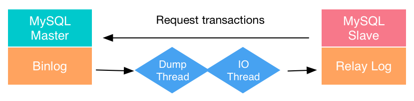
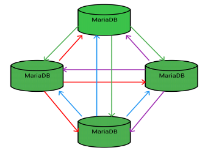
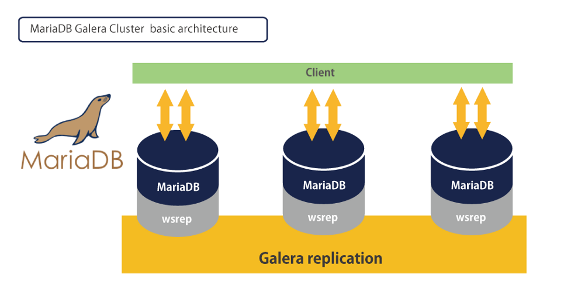

MariaDB Galera Cluster 建置
Contents

Galera Cluster 是 MariaDB 多主架構 (Multi-Master) 的解決方案。
公司目前常用的主從架構 (Master-Slave) 沒辦法做到各個結點 (node) 均可讀寫，並且確保資料一致性，因此不適合做為 HA (高可用) 的解決方案
比較 Master-Slave Replication V.S Galera Cluster (Multi-Master)
Master-Slave Replication

▲ MySQL Standard asynchronous replication 圖片來源:Different Types of MySQL Replication Solutions
優點 (Benefits):
- 能夠做到讀寫分離。Master node 負責寫入，其餘 Slave 當作讀取結點。
- 可以將某一 Slave 中斷跟隨，方便備份資料庫而不影響寫入。(在 Master node 執行 backup/dump 會 Locking Tables 造成寫入壅塞、暫時無法寫入)
- 歷史悠久，設定簡單。
缺點 (Disadvantage):
- 一旦 Master node 離線，必須手動將任一 Slave 變成 Master 才能恢復寫入能力。
Galera Cluster (Multi-Master)

▲ cluster 內所有 node 互相同步。 圖片來源:【MariaDB.com】 What is MariaDB Galera Cluster?

▲ 透過 wsrep (write set replication) 達到同步目的。圖片來源:İlham Bayramov-MariaDB Galera Cluster on CentOS 7
優點 (Benefits):
- Cluster 內任一結點均可讀寫 (Read/Write)
- 自動腳色控制，失效的結點會自動從 Cluster 移除。(
很難翻譯啦，跨謀改看英文拜託Automatic membership control, failed nodes drop from the cluster) - 不會有 Slave 落後情形
- Transaction 不會遺失
What is MariaDB Galera Cluster?#features
開始之前
Galera 版本說明
【MariaDB.com】 What is MariaDB Galera Cluster?#galera-versions
- MariaDB 10.1 and later 預設自帶 MySQL-wsrep
- MariaDB 10.3 and before 使用 Galera 3，MariaDB 10.4 and later 使用 Galera 4
- Galera 3: MySQL-wsrep 使用版本 25、 Galera wsrep provider library 使用版本 3
- Galera 4: MySQL-wsrep 使用版本 26、 Galera wsrep provider library 使用版本 4
Firewall Setting
Galera Cluster.com-Firewall Settings
3306: mysqld 預設使用
4567: Galera Cluster 同步流量。TCP 與 UDP 均要使用
4568: Incremental State Transfer
4444: State Snapshot Transfer
以下 安裝/設定 參考 DigitalOcean-How To Configure a Galera Cluster with MariaDB on CentOS 7 Servers
此次實驗總共有兩台 VM 分別是:
Eric_Keepalived_1 192.168.207.111
Eric_Keepalived_2 192.168.207.112
新增 MariaDB repo and Install
MariaDB.org 提供常見 Linux Distrobution 如何設定 MariaDB repository
|
|
CentOS 7 (x86_64) with MariaDB v10.4[old Stable]
|
|
接著啟用 mariadb 這個 repo。 yum makecache 這個指令是將軟體庫的元數據 (META-DATA) 快取一份到 local，加速在安裝時查找時間。
|
|
輸出結果如下:
|
|
順帶一提，如果想要關閉 yum 的外掛插件 (Plug-in) Fastestmirror 的話可以編輯設定檔，將 enable=1 改成 enable=0
希望關閉的原因是假設該機在部屬完成後將關閉對外連線能力，直接使用 yum 安裝套件時 Fastestmirror 會卡住，即使按下 Control-C 也必須等待一段時間。
|
|
安裝 MariaDB Server & Client
|
|
接著 Enable/Start MariaDB，待會要更改 MariaDB root 的密碼。
|
|
設定 MariaDB root 密碼
|
|
|
|
成功的話會輸出:
|
|
離開 MariaDB
|
|
設定 Galera Cluster
MariaDB 預設會去 /etc/mysql/conf.d 底下抓取設定檔。有點類似 httpd 主 conf 只是帶預設值，conf.d 底下可以覆蓋 (override) 過去~
設定檔的副檔名都必須以 .cnf 當作結尾。Cluster 內所有 node 設定檔都大同小異
|
|
|
|
需要修改的項目
wsrep_cluster_name=“galera_cluster”
First_Node_IP,Second_Node_IP,Third_Node_IP #依照節點設定
wsrep_node_address=“This_Node_IP” #使用該節點 Private IP
wsrep_node_name=“This_Node_Name” #建議使用 hostname
啟動叢集 Staring the Cluster
在這個步驟中，必須將所有節點的 MariaDB 停止。初始化 Cluster 只需要做一次，之後有新節點加入並不需要在做一次
在這個步驟中，必須將所有節點的 MariaDB 停止。初始化 Cluster 只需要做一次，之後有新節點加入並不需要在做一次
在這個步驟中，必須將所有節點的 MariaDB 停止。初始化 Cluster 只需要做一次，之後有新節點加入並不需要在做一次
|
|
Bring Up the First Node
告知第一個節點: 你是創世節點，並不是加入其他 Cluster 喔! 請產生出一個 Cluster 的 UUID
|
|
執行後沒有任何輸出即是成功
galera_new_cluster 這支腳本會將參數 --wsrep-new-cluster 傳送到 systemd。
官方文件 Getting Started with MariaDB Galera Cluster#bootstrapping-a-new-cluster 有說明幾種方式，不過還是建議直接使用 galera_new_cluster 以 systemd 啟動。
這時候查看 mariadb.service 的狀態可以看到服務已經是 running 狀態
|
|
查看 Cluster 內節點數量
|
|
查詢結果:
|
|
啟用第二節點
|
|
在第二節點查詢 Cluster 內節點數量
|
|
查詢結果:
|
|
測試節點同步狀況
在任一節點建立 Database:
|
|
這個時候去其他節點:
|
|
也應該看到相同資料庫
建立資料表:
|
|
11.2.5 Automatic Initialization and Updating for TIMESTAMP and DATETIME
看一下結構:
|
|
|
|
寫入資料:
|
|
bash 版本可以搭配 watch -n1，每一秒寫入資料庫一次。
P.S 寫成 .sh 檔案在給 watch 執行會比較方便
|
|
在任一節點查看資料:
|
|
|
|
刪除 Table
|
|
將其中一台 node 關機 或者 stop mariadb.service 之後在其他節點對 DB 寫入資料，接著 開機/start mariadb.service
在關機期間的資料都會被補回，達成完全同步
參考資料
【mysql Replication 方案優缺比較】多图文，详细介绍mysql各个集群方案
What is MariaDB Galera Cluster?#features
Getting Started with MariaDB Galera Cluster
【Replication 方案比較 圖較好看】Different Types of MySQL Replication Solutions
Author 老柯
LastMod 2023-02-21 (a43f1b9)